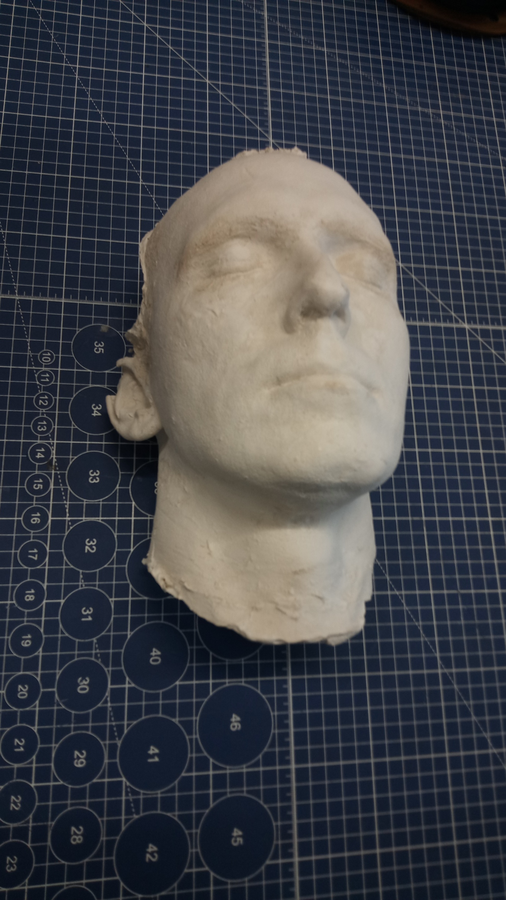
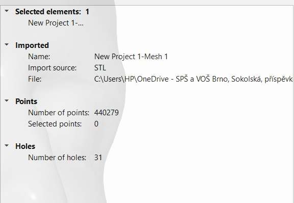
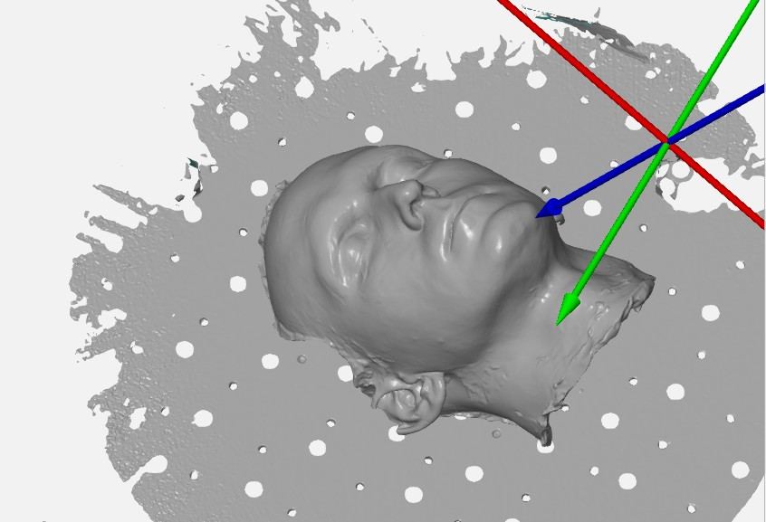
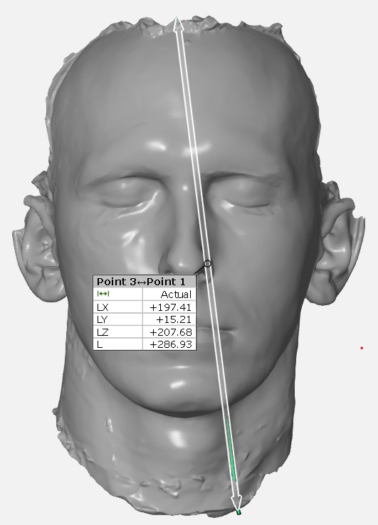
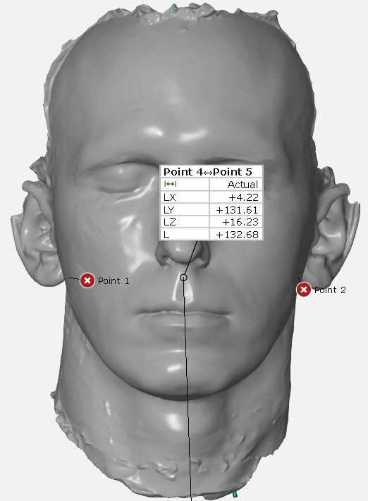

3D scanování
Na základě podkladá z přednášky a zaškolení jsme měli za úkol nascanovat zadaný objekt, u mě to byl sádrový model obličeje.
Nejprve jsem začal zapojením scanneru Simcan k PC a zkalibrováním pomocí kalibrační desky. Následovalo nanesení bodů na model tak, aby byly vidět vždy alespoň 3 body v každém pohledu. Snaha byla, aby při scanování vnitřní strany modelu bylo zachyceno co nejvíce bodů i z vnější strany kvůli co nejpřesnějšímu navázání obou scanů.


Dále proběhlo samotné scanování – zde nebylo potřeba nijak upravovat povrch kvůli odleskům. Pro nastavení scanu jsem použil výchozí hodnoty dle přiložené prezentace. Nastavení velikosti bylo na Large, které se pro velikost mého modelu hodilo nejvíce.
Po provedení scanu byli data vloženy do programu GOM inspect a byly zde zalepeny díry po bodech, a následně i uraveny nedokonalosti v scanu ,vyhlazena struktura porchua a snížil se pořet bodů které popisují modle .
 Nakonec byla změřen jeden největší rozměr, kterým byla vzdálenost bodu na spodní straně masky a bodu na horní straně, dále jsem si vybral rozměr bodů kde se uši připojují k hlavě.
 